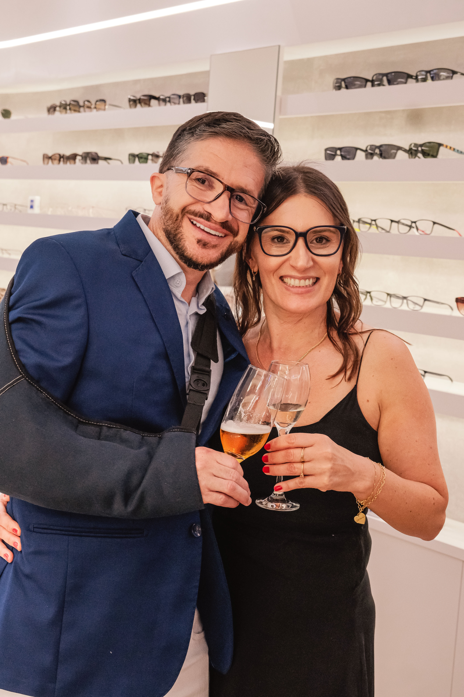
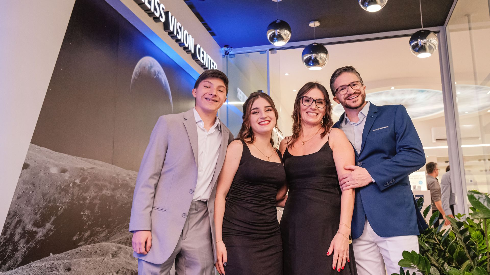
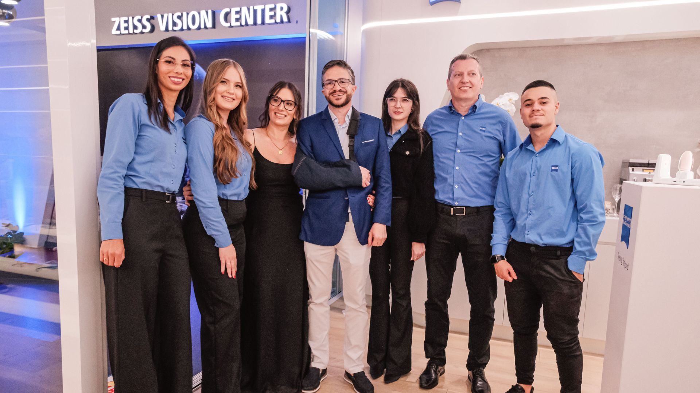

Zeiss Vision Center e a construção de um novo padrão óptico no Brasil

Inaugurada em 2014, a unidade da Zeiss Vision Center em Chapecó marcou o início de uma trajetória que viria a transformar o mercado óptico brasileiro. Como a primeira franquia oficial da marca no país, o projeto nasceu com o propósito de introduzir um novo padrão de atendimento, tecnologia e experiência visual, alinhado à tradição de excelência da Zeiss.
Mais do que a abertura de uma loja, a iniciativa representou o ponto de partida para a consolidação de um modelo inovador no Brasil, baseado na combinação entre precisão técnica, personalização e cuidado individualizado. Ao longo dos anos, a unidade acompanhou o crescimento da cidade e se firmou como referência em qualidade e credibilidade, contribuindo diretamente para a expansão da marca no país.

Esse movimento deu origem a uma rede que hoje se destaca como a maior operação franqueada da Zeiss fora da Alemanha, com presença em todas as regiões brasileiras. A evolução contínua foi sustentada pela incorporação de tecnologias avançadas, capazes de oferecer soluções cada vez mais precisas e adaptadas às necessidades de cada cliente.
À frente dessa trajetória, o franqueado e fundador Fabiano Corrêa Gasparetto conduziu o projeto com uma visão voltada ao longo prazo, pautada na construção de relações de confiança e no compromisso com a excelência. Ao longo dessa jornada, a unidade não apenas acompanhou o desenvolvimento de Chapecó, mas também se tornou parte ativa desse processo, consolidando sua relevância no cenário regional e nacional.

Mais de uma década depois, a Zeiss Vision Center Chapecó segue como um exemplo de como inovação, consistência e atenção aos detalhes podem redefinir padrões e elevar a experiência no mercado óptico, mantendo um olhar constante para o futuro sem perder a solidez de sua origem.